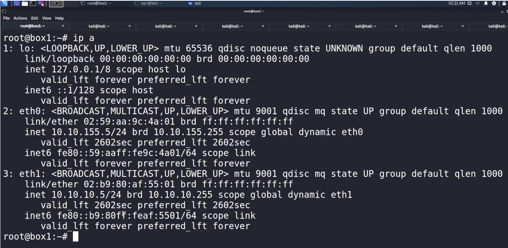

If u have compromised two machines and that machine allows you access to two network interfaces and those network interfaces share a new network that was orginally unavailable to you.

How to access this arbitary network that lives somewhere over here through this interface that now we have access to through this interface what we can do is we can actually setup up what is called a proxy and then pivot through that.
Tools to utilize to pivot through
We are going to SSH into a machine that we can assume that we'have compromised.
As you can see that we are dual home here (i.e. we have 2 IP address here.)
If we ping 10.10.10.5 and got to know that we can't access that network. (i.e. I don't have route to that network)
So in order to access it we have to access this network through Pivoting.


